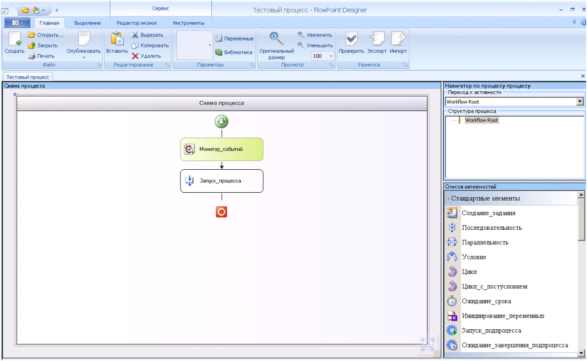
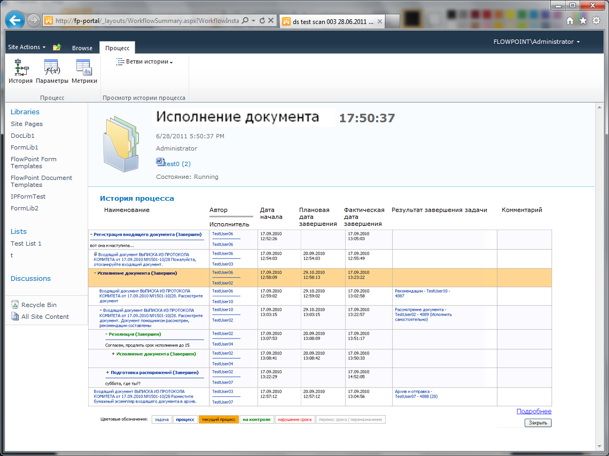

Автоматизация бизнес-процессов без кода
FlowPoint — платформа для быстрой автоматизации бизнес-процессов. Выстраивайте и управляйте сложными процессами на базе Alfresco или Microsoft SharePoint без привлечения программистов.
- Без написания кода
- Alfresco и MS SharePoint
- Запуск за один день

Основные возможности
Полный цикл управления процессами в одной платформе
От схемы на экране до контроля каждой задачи — без программирования и сложных интеграций.
-
Моделирование
Графический редактор позволяет обычным пользователям интуитивно создавать сложные блок-схемы процессов без привлечения программистов.
-
Исполнение
Запуск и выполнение процессов реализуются на базе платформ Alfresco или MS SharePoint.
-
Мониторинг
Единая панель управления объединяет всю информацию по процессу: этапы, задачи, исполнители, сроки, результаты и связанные процессы.

Цикл запуска нового процесса
Три шага от идеи до работающего процесса
Внедрение нового процесса состоит из трех шагов и может занять всего один день.
1 день
на запуск процесса
-
Шаг 1: Разработка форм
Создание пользовательских форм в визуальном редакторе с помощью готовых сервисов.
-
Шаг 2: Проектирование
Описание логики процесса в специализированном графическом редакторе (блок-схемы).
-
Шаг 3: Запуск
Публикация процесса в эксплуатацию нажатием одной кнопки. После этого процесс становится доступен пользователям.
Архитектура и компоненты
Кросс-платформенное решение
FlowPoint работает в Linux и Windows и встраивается в привычную для вашей компании инфраструктуру.
- Платформы
- Linux / Windows
- Интеграция
- Alfresco / MS SharePoint
- Базы данных
- PostgreSQL / MS SQL Server
- Движки процессов
- jBPM / Windows Workflow Foundation
Ключевые модули системы
- Графический редактор и компилятор процессов
- Ролевая система и подсистема замещений/делегирования
- Учет производственного календаря и нумерации
- Подсистема метрик, связей и связанных бизнес-процессов
- Работа с шаблонами и прикладные сервисы
- Расширения пользовательского интерфейса
Open Source Edition
FlowPoint OSE — единый слой интеграции ИС и BPMS
Расширение для интеграции информационных систем с системами управления бизнес-процессами (BPMS).
Подключайте одну или несколько BPMS к существующей ИС через унифицированный API — без прямого взаимодействия с каждой BPMS в отдельности.
Ваши ИС
Единый API
FlowPoint OSE
- Интерфейс администрирования
- Сервисы Web API
- Timer Service
- Модули интеграции с BPMS
- Базы данных процессов, задач и таймера
BPMS
Решаемые задачи
- 01Внедрение процессного подхода в существующие информационные системы
- 02Мульти-интеграция с различными BPMS (поддержка разных нотаций)
- 03Централизованное назначение задач пользователям и контроль их исполнения
- 04Автоматизация замещений сотрудников при распределении задач
- 05Аналитика эффективности работы сотрудников и подразделений в рамках бизнес-процессов
Основные функции
- 01Управление конфигурациями подключенных BPMS и сценариями запуска процессов
- 02Мониторинг активных процессов и назначенных задач в реальном времени
- 03Централизованное управление профилями пользователей
- 04Автоматическое переназначение задач на заместителей на основе заданных правил
Системные требования
Установка на одном сервере со встроенной БД PostgreSQL
- Процессор
- 64-бит, 2 ядра
- ОЗУ
- 2 ГБ — оценка, 6 ГБ — рабочая среда
- Диск
- 60 ГБ системного диска
- ОС
- Windows Server 2012 R2 (64-бит)
Установка в три шага
Все компоненты входят в дистрибутив
- 1
Config.cmdЗадайте путь установки и параметры PostgreSQL
- 2
Install.cmdЗапустите от имени администратора и дождитесь «Install Finished»
- 3
localhost:82Откройте панель администратора и проверьте работу сервисов